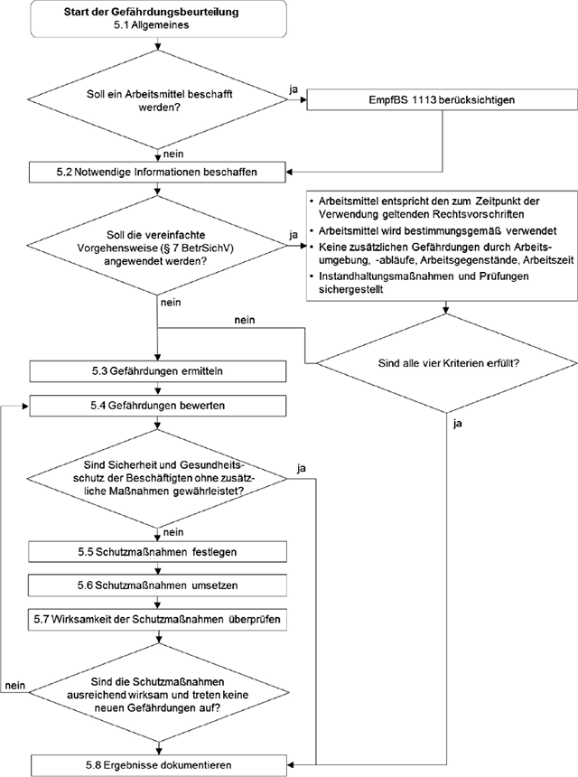

(1) Der Arbeitgeber ermittelt die bei der Verwendung des Arbeitsmittels auftretenden Gefährdungen. Ergibt die Bewertung der Gefährdungen, dass eine sichere Verwendung des Arbeitsmittels nicht möglich ist, so hat der Arbeitgeber geeignete Schutzmaßnahmen zu treffen, um die Gefährdungen so weit wie möglich zu reduzieren (Rangfolge der Schutzmaßnahmen s. Abschnitt 5.5.1).
(2) Grundsätzlich umfassen die festzulegenden Schutzmaßnahmen
(3) Für die Beschaffung von Arbeitsmitteln kann der Arbeitgeber die Empfehlungen zur Beschaffung von Arbeitsmitteln gemäß EmpfBS 1113 heranziehen.
(4) Die Prozessschritte bei der Durchführung der Gefährdungsbeurteilung sind in der nachfolgenden Abbildung dargestellt.

Abb. Prozessschritte bei der Durchführung der Gefährdungsbeurteilung
Zur Vorbereitung der Gefährdungsbeurteilung hat der Arbeitgeber die notwendigen Informationen für die zu beurteilenden Arbeitsmittel im Hinblick auf die Verwendung und die Beschaffenheit zu beschaffen.
(1) Der Arbeitgeber hat die Tätigkeiten unter Berücksichtigung aller Phasen der Verwendung der Arbeitsmittel zu ermitteln.
(2) Für die auftretenden Gefährdungen ist zu ermitteln, ob in der BetrSichV, den TRBS oder anderen Veröffentlichungen des Ausschusses für Betriebssicherheit (ABS) Schutzmaßnahmen einschließlich Festlegungen zu Prüfungen enthalten sind.
(3) Bereits vorliegende Gefährdungsbeurteilungen oder Dokumente mit entsprechenden Inhalten (z. B. Sicherheitsberichte, Unterlagen von Herstellern, Explosionsschutzdokument) können genutzt werden, sofern sie auf die Arbeitsmittel, Arbeitsbedingungen und Verfahren im Betrieb anwendbar sind.
(4) Hinweise der Beschäftigten bei der Verwendung der Arbeitsmittel sollen in die Gefährdungsbeurteilung einbezogen werden. Ebenso sollen auch die aufgrund betrieblicher Erfahrungen vorhersehbaren Handlungsweisen der Beschäftigten berücksichtigt werden.
(5) Erkenntnisse aus dem Unfallgeschehen und/oder aus Notfallsituationen sollen in die Gefährdungsbeurteilung einbezogen werden.
(6) Für die sichere Verwendung der Arbeitsmittel erforderliche Qualifikationen und Fähigkeiten der Beschäftigten sind zu ermitteln.
(1) Informationen über die Beschaffenheit des Arbeitsmittels sind z. B.
(2) Mindestens die vom Hersteller mitgelieferten Informationen können übernommen werden, sofern sie auf die Arbeitsmittel, Arbeitsbedingungen und Verfahren im Betrieb anwendbar sind und sofern der Arbeitgeber nicht über andere Erkenntnisse verfügt.
(3) Werden Arbeitsmittel durch den Arbeitgeber in eigener Verantwortung für die Verwendung im eigenen Betrieb hergestellt, übernimmt er die Verantwortung dafür, dass die Beschaffenheit dieser Arbeitsmittel den dafür geltenden Anforderungen genügt und die Anforderungen der BetrSichV bei der Verwendung dieser Arbeitsmittel erfüllt werden. Gemäß § 5 Absatz 3 BetrSichV müssen diese Arbeitsmittel den grundlegenden Sicherheitsanforderungen der anzuwendenden Gemeinschaftsrichtlinien entsprechen. Den formalen Anforderungen dieser Richtlinien (z. B. CE-Kennzeichen und EU-Konformitätserklärung) brauchen sie nicht zu entsprechen, es sei denn, es ist in der jeweiligen Richtlinie ausdrücklich anders bestimmt (§ 5 Absatz 3 BetrSichV).
(4) Für die Herstellung von Arbeitsmitteln unter der Verantwortung des Arbeitgebers, für die es keine EU-Vorgaben aus den Gemeinschaftsrichtlinien gibt, ergeben sich die Beschaffenheitsanforderungen aus der Gefährdungsbeurteilung bzw. den Schutzzielanforderungen der BetrSichV, insbesondere §§ 4, 5, 6, 8 und 9 sowie Anhang 1. Gleiches gilt bei der Änderung oder dem Umbau von vorhandenen Arbeitsmitteln aus dem Bestand des Arbeitgebers. Hier hat der Arbeitgeber entsprechend § 10 Absatz 5 BetrSichV zu beurteilen, ob er bei der Änderung bzw. dem Umbau Herstellerpflichten zu beachten hat. Dies wäre z. B. der Fall, wenn die Änderung bzw. der Umbau einer Maschine als eine wesentliche Veränderung zu betrachten wäre.
(1) Wenn der Arbeitgeber die Gefährdungen ermittelt und beurteilt und die grundlegenden Schutzmaßnahmen gemäß § 6 BetrSichV getroffen hat, kann er prüfen, ob die Voraussetzungen für die vereinfachte Vorgehensweise gemäß § 7 BetrSichV gegeben sind. Die vereinfachte Vorgehensweise entbindet den Arbeitgeber nicht davon, die auftretenden Gefährdungen vollständig zu ermitteln. Eine Vereinfachung ergibt sich vorwiegend bei der Dokumentation der Gefährdungsbeurteilung. Bei der erstmaligen Verwendung neuer Arbeitsmittel ermöglicht die vereinfachte Vorgehensweise einen guten Einstieg in die Gefährdungsbeurteilung, der (im Zusammenspiel mit der später erforderlichen Überprüfung der Gefährdungsbeurteilung) systematisch genutzt werden kann.
(2) Vor der Anwendung der vereinfachten Vorgehensweise hat der Arbeitgeber sicherzustellen, dass die folgenden Kriterien erfüllt werden:
(3) Die Erfüllung der oben genannten Voraussetzungen ist zu dokumentieren (s. Abschnitt 5.8).
(4) Die vereinfachte Vorgehensweise ist für überwachungsbedürftige Anlagen und die in Anhang 3 BetrSichV genannten Arbeitsmittel nicht zulässig.
(1) Für jede Verwendung von Arbeitsmitteln ist systematisch zu ermitteln, welche Gefährdungen auftreten können. Die Systematik muss der Komplexität des Arbeitsmittels und seiner Verwendung angemessen sein und deutlich machen, welche Prozesse, Tätigkeiten und Arbeitsplätze berücksichtigt werden. Bei der gleichartigen Verwendung von Arbeitsmitteln kann die Gefährdungsbeurteilung zusammengefasst werden (s. Abschnitt 4.2 Absatz 4).
(2) Der Arbeitgeber kann davon ausgehen, dass die vom Hersteller des Arbeitsmittels mitgelieferten Informationen zutreffend sind, sofern er nicht über andere Erkenntnisse verfügt (§ 3 Absatz 4 Satz 4 BetrSichV). Liegt eine Betriebsanleitung des Herstellers vor, kann der Arbeitgeber davon ausgehen, dass die für das Arbeitsmittel zutreffenden Gefährdungen bei bestimmungsgemäßer Verwendung gemäß dem geltenden Regelwerk und somit nach dem Stand der Technik zum Inverkehrbringen berücksichtigt wurden. Eine erneute Bewertung dieser Gefährdungen durch den Arbeitgeber ist nicht erforderlich, sofern die von ihm vorgesehene Verwendung nicht von der vom Hersteller festgelegten bestimmungsgemäßen Verwendung abweicht und keine offensichtlichen Mängel erkennbar sind.
(3) Angaben des Herstellers zur sicheren Verwendung in der Gebrauchs- oder Betriebsanleitung sind vom Arbeitgeber in der Gefährdungsbeurteilung zu berücksichtigen.
(4) Bei der Ermittlung von Gefährdungen sind insbesondere folgende Gefährdungsfaktoren zu berücksichtigen, sofern sie für die Verwendung des jeweiligen Arbeitsmittels relevant sind:
Es wird darauf hingewiesen, dass es für einige der genannten Gefährdungsfaktoren weitere Rechtsvorschriften mit Relevanz für die sichere Verwendung von Arbeitsmitteln gibt, z. B. OStrV, GefStoffV, LärmVibrationsArbSchV, ArbStättV.
(1) Die ermittelten Gefährdungen sind dahingehend zu bewerten, ob bei der vorgesehenen Verwendung des Arbeitsmittels Sicherheit und Gesundheitsschutz der Beschäftigten gewährleistet sind. Ist dies nicht der Fall, hat der Arbeitgeber Schutzmaßnahmen nach Abschnitt 5.5 festzulegen.
(2) Bei der Bewertung ist der Stand der Technik zur sicheren Verwendung von Arbeitsmitteln zugrunde zu legen, wie er in der BetrSichV und in den Technischen Regeln beschrieben ist.
(3) Wenn in der BetrSichV und den TRBS keine konkreten Aussagen für das jeweilige Arbeitsmittel und dessen Verwendung zur Sicherheit und zum Gesundheitsschutz durch die Beschäftigten enthalten sind, muss der Arbeitgeber prüfen, ob es andere gesicherte arbeitswissenschaftliche Erkenntnisse gibt. Dabei kommen Empfehlungen des ABS gemäß § 21 Absatz 6 Nummer 2 BetrSichV, DGUV-Regelwerke und Veröffentlichungen der einzelnen Unfallversicherungsträger, der Länder sowie der BAuA in Betracht.
(4) Sofern es für das eingesetzte Arbeitsmittel auch nach Absatz 3 keine konkreten Aussagen gibt, muss der Arbeitgeber bewerten, ob die Sicherheit und der Gesundheitsschutz der Beschäftigten gewährleistet sind. Dabei kann er z. B. auf Branchenstandards, Veröffentlichungen von Industrie- oder Handwerksverbänden zurückgreifen oder interne bzw. externe Fachleute hinzuziehen.
(1) Die in diesem Abschnitt dargestellten Handlungsgrundsätze dienen der Orientierung bei der Festlegung von Maßnahmen zum Schutz vor Gefährdungen und geben gemäß § 4 Absatz 2 Satz 2 BetrSichV eine grundsätzliche T-O-P-Rangfolge vor:
(2) Schutzmaßnahmen sind – möglichst schon vor der Beschaffung der Arbeitsmittel – mit dem Ziel zu planen, Technik, Arbeitsorganisation und sonstige Arbeitsbedingungen fachgerecht zu verknüpfen, damit Gefährdungen bei allen von Beschäftigten durchgeführten Tätigkeiten und den dabei nach den betrieblichen Erfahrungen vorhersehbaren Handlungsweisen vermieden oder minimiert werden.
(3) Schutzmaßnahmen sind so zu gestalten und festzulegen, dass die zur Durchführung der vorgesehenen Tätigkeiten erforderlichen Bewegungs- und Arbeitsabläufe nicht oder möglichst wenig gestört werden.
(4) Häufig können Gefährdungen nicht durch eine einzelne Schutzmaßnahme vermieden oder hinreichend reduziert werden. Dies trifft insbesondere dann zu, wenn ein Arbeitsmittel in unterschiedlichen Betriebsarten verwendet wird. Grundsätzlich führt die Gefährdungsbeurteilung daher zu einer fachgerechten Verknüpfung von technischen, organisatorischen und personenbezogenen Maßnahmen (T-O-P) unter Berücksichtigung der Rangfolge gemäß Absatz 1.
(5) Für die Festlegung von Schutzmaßnahmen finden sich Hilfestellungen in den gefährdungsbezogenen Regeln der TRBS 2000er-Reihe sowie in den arbeitsmittelbezogenen Regeln der TRBS 3000er-Reihe.
(6) Der Arbeitgeber muss in seiner betrieblichen Organisation regeln, dass Beschäftigte nur sichere Arbeitsmittel verwenden und Arbeitsmittel, die sicherheitsrelevante Mängel aufweisen, nicht verwendet werden dürfen.
(1) Technische Schutzmaßnahmen sollen so ausgewählt und umgesetzt werden, dass sie willensunabhängig wirksam sind und eine sichere Verwendung des Arbeitsmittels gewährleisten. Zu den technischen Schutzmaßnahmen an Arbeitsmitteln zählen beispielsweise
(2) Der Arbeitgeber hat die für die von ihm vorgesehene Verwendung erforderlichen technischen Schutzmaßnahmen festzulegen, soweit diese nicht bereits durch die vom Hersteller für die bestimmungsgemäße Verwendung des Arbeitsmittels vorgesehenen Schutzmaßnahmen realisiert sind.
(1) Durch organisatorische Schutzmaßnahmen kann sichergestellt werden, dass alle für die sichere Durchführung von Arbeiten erforderlichen Ressourcen rechtzeitig zur Verfügung stehen, Arbeitsabläufe sicher, fachgerecht geplant und durchgeführt werden sowie Arbeitsmittel und persönliche Schutzausrüstungen bestimmungsgemäß verwendet und überprüft werden.
(2) Organisatorische Schutzmaßnahmen sollen so ausgewählt werden, dass auftretende Gefährdungen in allen Phasen der Verwendung vermieden oder minimiert werden. Die Wirksamkeit von technischen Schutzmaßnahmen muss zudem durch geeignete organisatorische Maßnahmen dauerhaft erhalten bleiben. Wenn dies nicht möglich ist, sind verbleibende Gefährdungen in der Gefährdungsbeurteilung zu dokumentieren, und ergänzende personenbezogene Schutzmaßnahmen zu treffen.
(3) Beispiele für Maßnahmen nach Absatz 2 sind
(1) Personenbezogene Schutzmaßnahmen können begleitend zu technischen oder organisatorischen Schutzmaßnahmen festgelegt werden. Wenn technische oder organisatorische Schutzmaßnahmen in Ausnahmefällen nicht oder nur mit unverhältnismäßigem Aufwand angewendet werden können, dürfen personenbezogene Schutzmaßnahmen als alleinige Schutzmaßnahme angewendet werden (s. dazu die Hinweise zur Bewertung von Ausnahmefällen in der EmpfBS 1114).
(2) Personenbezogene Schutzmaßnahmen müssen so ausgewählt werden, dass Beschäftigte sich und andere ausreichend gegen Gefährdungen schützen können und sich daraus keine neuen Gefährdungen ergeben. Der Arbeitgeber muss sicherstellen, dass die personenbezogenen Schutzmaßnahmen angewandt werden.
(3) Personenbezogene Schutzmaßnahmen sind persönliche Schutzausrüstungen wie Schutzhelm, Schutzschuhe oder Gehörschutz und Vorgaben zum Verhalten von Beschäftigten, z. B. zur Benutzung persönlicher Schutzausrüstung und zur richtigen Reaktion auf Warnsignale bei Arbeiten.
(1) Kann eine Gefährdung von Beschäftigten anderer Arbeitgeber nicht ausgeschlossen werden, so haben alle betroffenen Arbeitgeber bei ihren Gefährdungsbeurteilungen zusammenzuwirken und die Schutzmaßnahmen so abzustimmen und durchzuführen, dass diese wirksam sind (§ 11 BetrSichV). Das gilt insbesondere, wenn Arbeitsmittel von Beschäftigten verschiedener Arbeitgeber verwendet werden, was z. B. beim Be- und Entladen von Fahrzeugen oder bei der Instandhaltung von Arbeitsmitteln gegeben sein kann.
(2) Eine Abstimmung der Schutzmaßnahmen kann auch dann erforderlich sein, wenn mehrere Arbeitgeber nacheinander Tätigkeiten mit Arbeitsmitteln oder Arbeitsgegenständen durchführen. Dies gilt immer dann, wenn Gefährdungen bei nachfolgenden Tätigkeiten von den vorher durchgeführten Tätigkeiten beeinflusst werden, z. B.
(3) Eine Abstimmung der Schutzmaßnahmen kann auch dann erforderlich sein, wenn durch die Zusammenarbeit verschiedener Teams oder Arbeitsschichten eines Arbeitgebers Gefährdungen entstehen.
(4) Besteht bei der Verwendung von Arbeitsmitteln eine erhöhte Gefährdung der Beschäftigten anderer Arbeitgeber, ist ein Koordinator gemäß § 13 BetrSichV schriftlich zu bestellen. Eine erhöhte Gefährdung bei der Zusammenarbeit mehrerer Arbeitgeber besteht z. B. bei gleichzeitigem Arbeiten auf mehreren Arbeitsebenen, Arbeiten in großer Höhe, Ausbau von schweren Maschinenteilen, gleichzeitigem Einsatz mehrerer Krane oder mobiler Arbeitsmittel.
Der Arbeitgeber hat die Voraussetzungen zu schaffen und dafür zu sorgen, dass die festgelegten Schutzmaßnahmen umgesetzt und während des gesamten Zeitraums der Verwendung aufrechterhalten werden, z. B. durch Festlegung von Terminen und Verantwortlichkeiten.
(1) Bei der Überprüfung der Wirksamkeit der Schutzmaßnahmen muss der Arbeitgeber insbesondere feststellen, ob
(2) Die Überprüfung der Wirksamkeit der Schutzmaßnahmen ist vor der erstmaligen Verwendung des Arbeitsmittels und anschließend in regelmäßigen Abständen durchzuführen. Die Zeitabstände legt der Arbeitgeber fest. Er kann sich dabei auf z. B. Betriebsanleitungen, Technische Regeln und Betriebserfahrungen abstützen.
(3) Wird bei der Überprüfung festgestellt, dass die Schutzmaßnahmen nicht ausreichend wirksam sind oder sich aus diesen neue Gefährdungen ergeben haben, muss die Gefährdungsbeurteilung diesbezüglich aktualisiert werden.
(1) Der Arbeitgeber hat das Ergebnis seiner Gefährdungsbeurteilung zu dokumentieren. Erforderliche Angaben sind mindestens:
(2) Die Dokumentation darf auch in elektronischer Form vorgenommen werden.
(3) Sofern der Arbeitgeber von der vereinfachten Vorgehensweise nach § 7 BetrSichV Gebrauch macht und die Gefährdungsbeurteilung ergibt, dass alle dort genannten Voraussetzungen vorliegen, ist eine Dokumentation dieser Voraussetzungen ausreichend.
(4) Bei gleichartigen Arbeitsmitteln und Gefährdungen ist es ausreichend, wenn die Unterlagen zusammengefasste Angaben enthalten.
(5) Wenn bereits vorhandene Gefährdungsbeurteilungen oder gleichwertige Unterlagen, die der Hersteller oder Inverkehrbringer mitgeliefert hat, vom Arbeitgeber übernommen werden, sind diese der Dokumentation beizufügen.
(6) Die Form der Dokumentation der Gefährdungsbeurteilung ist nach der BetrSichV nicht vorgegeben. Sie kann verschiedene Dokumente umfassen, z. B. Betriebsanleitung, Betriebsanweisung, Freigabeverfahren, Explosionsschutzdokument. Die entsprechenden Unterlagen müssen jedoch auf Systematik und Vollständigkeit überprüfbar und verfügbar sein. Bei Arbeitsmitteln, für die keine Betriebs- oder Gebrauchsanleitung nach § 3 Absatz 4 ProdSG mitgeliefert werden muss, ist grundsätzlich eine gesonderte Dokumentation verzichtbar.
(7) Die Gefährdungsbeurteilung ist regelmäßig zu überprüfen (s. dazu auch Abschnitt 4.1 sowie § 3 Absatz 7 BetrSichV). Die Zeitabstände legt der Arbeitgeber fest. Er kann sich dabei z. B. auf Betriebsanleitungen, Technische Regeln und Betriebserfahrungen abstützen. Auch wenn keine Aktualisierung der Gefährdungsbeurteilung erforderlich ist, hat der Arbeitgeber die Überprüfung unter Angabe des Datums in der Dokumentation der Gefährdungsbeurteilung zu vermerken.
(8) Empfehlungen für die Dokumentation der Gefährdungsbeurteilung sind anhand von ausgewählten Beispielen in Anhang 2 dargestellt.